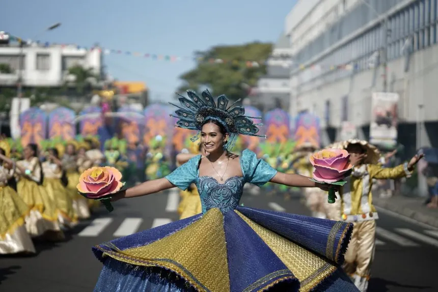
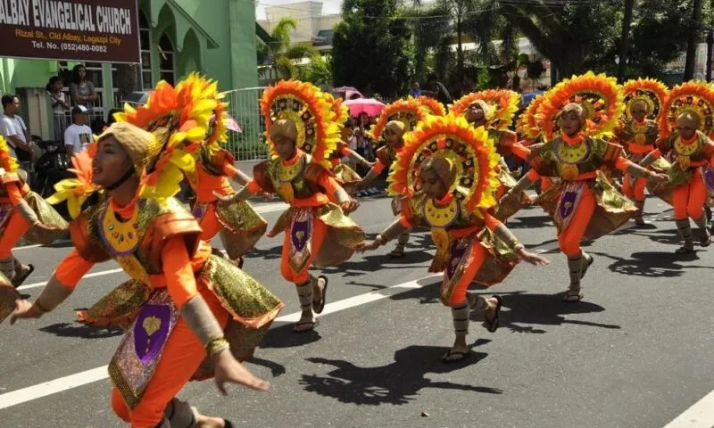
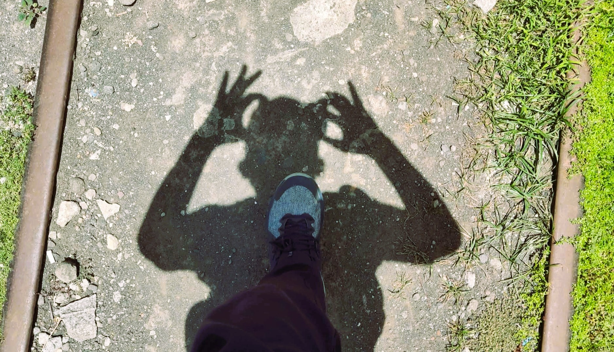
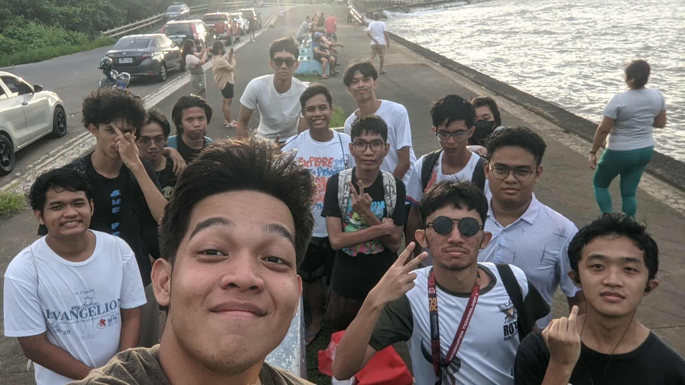
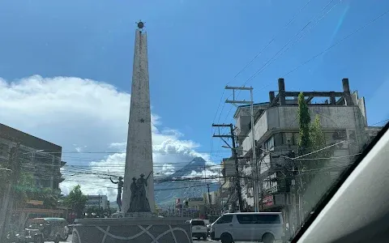
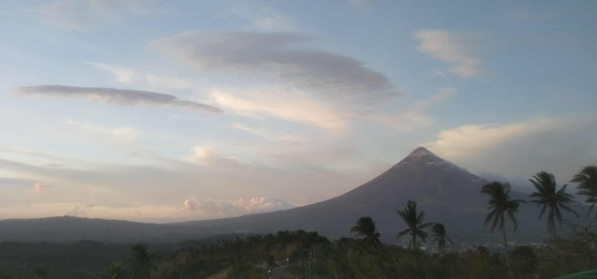

Culture &
Heritage
Centuries of Bicolano identity - language, faith, volcanic memory, festivals, and the resilience of a people who live beside an active volcano.
The Bicolano spirit
Warm, resilient, and rooted - Legazpeños have lived alongside Mayon for centuries and built a culture that reflects exactly that.

🌺Magayon FestivalMagayon Festival
Held every May in Legazpi City, the Magayon Festival celebrates Albay's premier beauty. Named after the legendary Bicolana princess Daragang Magayon as it features street dancing, trade fairs, and cultural shows that draw visitors from across the country. The festival showcases the best of Bicolano art, cuisine, and pageantry.

🎭Ibalong FestivalIbalong Festival
The Ibalong Festival brings Bicol's ancient epic poem to life in the streets of Legazpi. Vivid costumes and choreographed dances depicting the legendary heroes Baltog, Handiong, and Bantong. The Ibalong Monument in Brgy 25 stands as a permanent tribute to this epic, right in the heart of the city's most lived-in barangay.

🚂Railway HeritageRailway Heritage
The PNR Bicol line once ran from Manila to Legazpi, cutting through Brgy 16 Kawit along East Washington Drive. For decades it was the commercial artery of Bicol - passengers, cargo, connection. The riles are quiet now, but the corridor still carries that memory. Walking it is like reading a chapter of the city's history in iron and asphalt.

🗣️Bicolano LanguageBicolano Language
Central Bikol is the heart language of Legazpi. Quick, expressive, and warm in a way that mirrors the people who speak it. Distinct from Tagalog and Visayan, it carries its own music. "Marhay na aldaw!" (Good day!) is usually your first welcome to the city, and it's delivered like it means it.

⛪Faith & MonumentsFaith & Monuments
The Battle of Legazpi Monument in Brgy 25 commemorates the city's historical significance as a strategic point during the Spanish colonial era. Alongside the religious heritage represented by the city's churches and the Cagsawa Ruins, these monuments form a layer of civic and spiritual memory that runs through everyday Legazpi life.

🌋Living beside MayonLiving beside Mayon
Mayon is not just a landmark, it is a living presence that shapes the psychology, calendar, and identity of every Legazpeño. Eruptions have displaced communities and destroyed crops, and yet the people return, rebuild, and find beauty in the mountain that has taken so much and given even more. This is the defining fact of Bicolano life.
Artisans &
handicrafts
Pili nut confections, abaca weaving, and buri palm crafts are deeply embedded in Bicolano livelihood. Pasalubong stores across Legazpi carry generations of craft work - the kind you can eat, wear, or display.